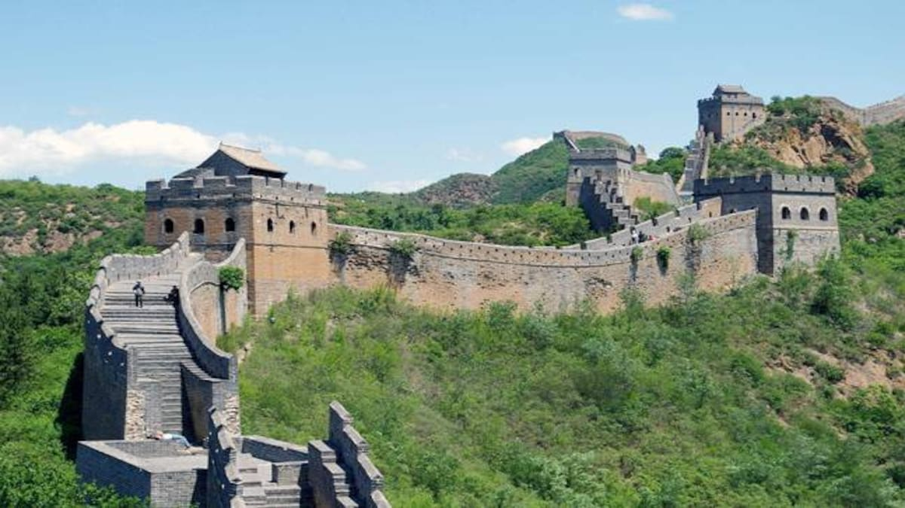
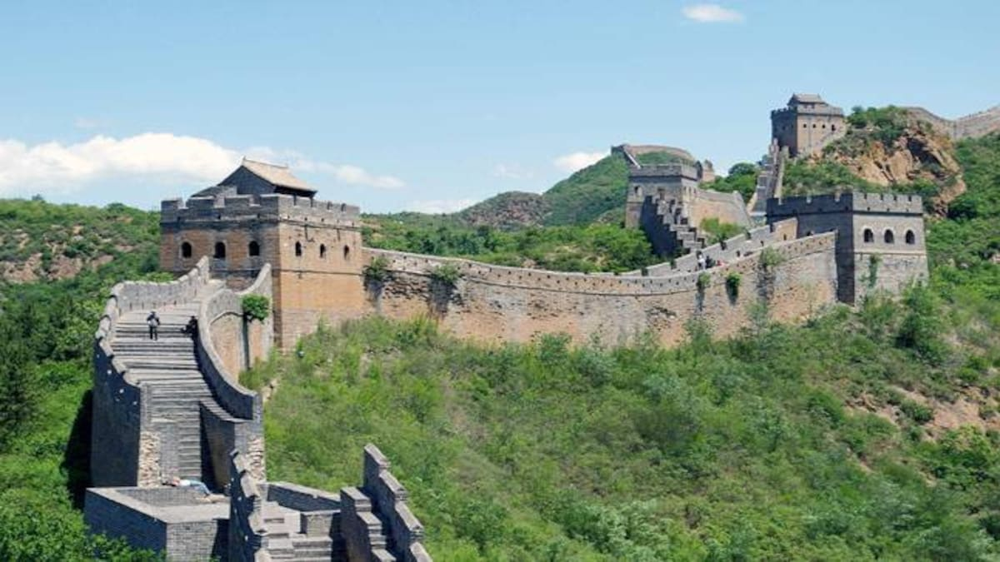

Great wall of china
 

Name and Orthography
In Chinese histories, the term "Long Wall(s) appears in Sima Qian's Records of the Grand Historian, where it referred both to the separate great walls built between and north of the Warring States and to the more unified construction of the First Emperor. The Chinese character meaning city or fortress, is a phono-semantic compound of the "earth" radical and phonetic whose Old Chinese pronunciation has been reconstructed as It originally referred to the rampart which surrounded traditional Chinese cities and was used by extension for these walls around their respective states; today, however, it is much more often the Chinese word for "city".
Because of the wall's association with the First Emperor's supposed tyranny, the Chinese dynasties after Qin usually avoided referring to their own additions to the wall by the name "Long Wall".Instead, various terms were used in medieval records, including "frontier(s)" Only during the Qing period did "Long Wall" become the catch-all term to refer to the many border walls regardless of their location or dynastic origin, equivalent to the English "Great Wall".
The current English name evolved from accounts of "the Chinese wall" from early modern European travelers. By the nineteenth century,"The Great Wall of China" had become standard in English and French, although other European languages such as German continue to refer to it as "the Chinese wall".
History
The Chinese were already familiar with the techniques of wall-building by the time of the Spring and Autumn period between the 8th and 5th centuries BC. During this time and the subsequent Warring States period, the states of Qin, Wei, Zhao, Qi, Han, Yan, and Zhongshan all constructed extensive fortifications to defend their own borders. Built to withstand the attack of small arms such as swords and spears, these walls were made mostly of stone or by stamping earth and gravel between board frames.
The Great Wall of the Han is the longest of all walls, from Mamitu near Yumenguan to Liaodong.
King Zheng of Qin conquered the last of his opponents and unified China as the First Emperor of the Qin dynasty ("Qin Shi Huang") in 221 BC. Intending to impose centralized rule and prevent the resurgence of feudal lords, he ordered the destruction of the sections of the walls that divided his empire among the former states. To position the empire against the Xiongnu people from the north, however, he ordered the building of new walls to connect the remaining fortifications along the empire's northern frontier. "Build and move on" was a central guiding principle in constructing the wall, implying that the Chinese were not erecting a permanently fixed border.Transporting the large quantity of materials required for construction was difficult, so builders always tried to use local resources. Stones from the mountains were used over mountain ranges, while rammed earth was used for construction in the plains. There are no surviving historical records indicating the exact length and course of the Qin walls. Most of the ancient walls have eroded away over the centuries, and very few sections remain today. The human cost of the construction is unknown, but it has been estimated by some authors that hundreds of thousands workers died building the Qin wall. Later, the Han, the Northern Dynasties and the Sui all repaired, rebuilt, or expanded sections of the Great Wall at great cost to defend themselves against northern invaders. The Tang and Song dynasties did not undertake any significant effort in the region.Non-Han dynasties also built their border walls: the Xianbei-ruled Northern Wei, the Khitan-ruled Liao, Jurchen Jin and the Tangut-established Western Xia, who ruled vast territories over Northern China throughout centuries, all constructed defensive walls but those were located much to the north of the other Great Walls as we know it, within China's province of Inner Mongolia and in Mongolia itself.
Prologue
The Great Wall concept was revived again under the Ming in the 14th century, and following the Ming army's defeat by the Oirats in the Battle of Tumu. The Ming had failed to gain a clear upper hand over the Mongolian tribes after successive battles, and the long-drawn conflict was taking a toll on the empire. The Ming adopted a new strategy to keep the nomadic tribes out by constructing walls along the northern border of China. Acknowledging the Mongol control established in the Ordos Desert, the wall followed the desert's southern edge instead of incorporating the bend of the Yellow River.
Unlike the earlier fortifications, the Ming construction was stronger and more elaborate due to the use of bricks and stone instead of rammed earth. Up to 25,000 watchtowers are estimated to have been constructed on the wall.As Mongol raids continued periodically over the years, the Ming devoted considerable resources to repair and reinforce the walls. Sections near the Ming capital of Beijing were especially strong. Qi Jiguang between 1567 and 1570 also repaired and reinforced the wall, faced sections of the ram-earth wall with bricks and constructed 1,200 watchtowers from Shanhaiguan Pass to Changping to warn of approaching Mongol raiders. During the 1440s–1460s, the Ming also built a so-called "Liaodong Wall". Similar in function to the Great Wall (whose extension, in a sense, it was), but more basic in construction, the Liaodong Wall enclosed the agricultural heartland of the Liaodong province, protecting it against potential incursions by Jurched-Mongol Oriyanghan from the northwest and the Jianzhou Jurchens from the north. While stones and tiles were used in some parts of the Liaodong Wall, most of it was in fact simply an earth dike with moats on both sides.
Towards the end of the Ming, the Great Wall helped defend the empire against the Manchu invasions that began around 1600. Even after the loss of all of Liaodong, the Ming army held the heavily fortified Shanhai Pass, preventing the Manchus from conquering the Chinese heartland. The Manchus were finally able to cross the Great Wall in 1644, after Beijing had already fallen to Li Zicheng's rebels. Before this time, the Manchus had crossed the Great Wall multiple times to raid, but this time it was for conquest. The gates at Shanhai Pass were opened on May 25 by the commanding Ming general, Wu Sangui, who formed an alliance with the Manchus, hoping to use the Manchus to expel the rebels from Beijing.The Manchus quickly seized Beijing, and eventually defeated both the rebel-founded Shun dynasty and the remaining Ming resistance, establishing the Qing dynasty rule over all of China.
Under Qing rule, China's borders extended beyond the walls and Mongolia was annexed into the empire, so constructions on the Great Wall were discontinued. On the other hand, the so-called Willow Palisade, following a line similar to that of the Ming Liaodong Wall, was constructed by the Qing rulers in Manchuria. Its purpose, however, was not defense but rather to prevent Han Chinese migration into Manchuria.
Location
Great Wall of China location is mainly in northern China, and there are a few sections in southern China called southern Great Wall. The vast majority of the Great Wall we see today was built in Ming Dynasty (1368 - 1644); they are mostly preserved in Beijing.
Total Length: 21,196 kilometers (13,170 miles)
Course & Coverage: Start from Jiayuguan Pass in Gansu Province in west China and end at Hushan Mountain in Liaoning Province in the east, traversing 15 provinces/ regions including Beijing, Tianjin, Hebei, Shanxi, Inner Mongolia, Jilin, Heilongjiang, Shandong, Henan, Shaanxi and Qinghai, leaving 43,721 heritage sites including the walls, ditches and passes.
Great Wall of China location is mainly in northern China, and there are a few sections in southern China called southern Great Wall. The vast majority of the Great Wall we see today was built in Ming Dynasty (1368 - 1644); they are mostly preserved in Beijing.
Total Length: 21,196 kilometers (13,170 miles)
Course & Coverage: Start from Jiayuguan Pass in Gansu Province in west China and end at Hushan Mountain in Liaoning Province in the east, traversing 15 provinces/ regions including Beijing, Tianjin, Hebei, Shanxi, Inner Mongolia, Jilin, Heilongjiang, Shandong, Henan, Shaanxi and Qinghai, leaving 43,721 heritage sites including the walls, ditches and passes.
The main sections of the Great Wall are concentrated in Beijing, such as Badaling, Mutianyu, Jinshanling, Simatai, Juyongguan and Jiankou.
Our Great Wall maps cover where the main Great Wall sections are in China today, from Jiayuguan in China's northwest to Shanhaiguan on the east coast, with the most popular sections being around Beijing. Then our historical Great Wall maps chart where the Great Wall was built in the Ming Dynasty (1368–1644) all the way back to state walls of the Chu Kingdom (c. 650 BC).
Unless you really want to see the Shuiguan Great Wall section, avoid being conned into a visit instead of nearby Badaling. Juyongguan is a Great Wall fort occupying the main valley leading to Beijing from the northwest.
Economy of Greatwall of China
To essentially prevent Chinese capital from taking over distressed businesses, India amended foreign direct investment (FDI) rules on Saturday to mandate government approval for all investments from ‘border’ countries. This is undoubtedly a critical crossroad in the India-China relationship. But it cannot be understood in isolation from other consequential bilateral shifts.
These changes first began meaningfully in May 2017, when India objected to China’s efforts to reshape the Asian continent using the Belt and Road Initiative (BRI).
For decades, India and China were imagined by many as the future co-guarantors of the ‘Asian Century’. This changed in the aftermath of the 2008 financial crisis, when China saw an opportunity to cement its leadership by establishing either a multi- or bipolar world while shaping a firmly unipolar Asia. India fully internalised this reality only after Beijing repeatedly ignored Delhi’s call to ‘multilateralise’ BRI, and mounted an offensive in Doklam, on the Bhutan-China frontier and perilously close to the ‘Chicken’s Neck’ corridor that links India’s Northeast to the rest of the country.
There are also global tailwinds that India can take advantage of as it reconfigures its economic relationship with China. New Delhi is not the only capital revisiting its interdependence with Beijing. EU has labelled China a ‘systemic economic rival’. The Donald Trump administration’s trade war targets the ‘Made in China 2025’ initiative. And Japan is diversifying its supply chains away from the ‘middle kingdom’. Like with India, the Covid-19 outbreak and ensuing economic crisis has accelerated these measures.
This is also part of a broader trend defining globalisation: the era of free and open trade may be at an end. The future may be characterised by ‘gated’ globalisation, where economic relationships will have to be underpinned by political trust. India stands to gain from this. Its political familiarity with large trading blocs like the US, EU and Japan make it a far more secure economic partner than China.
Interesting facts about Greatwall of China
1. The official length is 21,196.18 km (13,170.7 mi) —; (6+ dynasties' worth)
2. Most of today's relics are the Ming Dynasty Great Wall: length 8,851 km (5,500 mi).
3. The Great Wall is more than 2,300 years old.
4. The Ming Great Wall crosses 9 provinces and municipalities: Liaoning, Hebei, Tianjin, Beijing, Inner Mongolia, Shanxi, Shaanxi, Ningxia, Gansu.
5. Badaling is the most visited section (63,000,000 visitors in 2001). And in the first week of May and October, the visitor flow can be up to 70,000 per day.
simataiThe Great Wall at Simatai
6. The average height of the Great Wall at Badaling and Juyong Pass is 7.88 meters, and the highest place is 14 meters high.
7. Nearly 1/3 of the Great Wall has disappeared without trace.
8. Since 1644, when the Ming Dynasty was overthrown, no further work has been done on the Great Wall (for military purposes — some has been restored for tourism).
9. Great Wall reconstruction and protection began with Badaling in 1957.
10. In December 1987 the Great Wall was placed on the World Heritage List by UNESCO.
More about Greatwall of China
There is a wide misconception that the Great Wall was built under the order of Emperor Qin Shi Huang (259 - 210BC), but it is not true. The fact is that the initial construction was 2,700 years ago during the Spring and Autumn Period (770 - 276BC). The fortifications built by Chu State during the 7th century BC have been proven to be the earliest Great Wall. The last construction was in 1878 in the late Qing Dynasty.
The structure is not in a single long line! In fact, there is not one wall, but many walls, in the plural. It is a defensive network consisting of many walls and forts built in different historical periods, with some segments scattering while some running parallel. In some places, the wall doubles or even triples itself.
Emperor Qin Shi Huang is often referred as the initiator of the Great Wall. Actually it was he who first commanded the linking of the separate sections built by previous states. It is surprising to know that the decision for this huge project was made due to a rumor! After unifying central China and establishing the Qin Dynasty in 221BC, Emperor Qin Shi Huang wanted to consolidate his power and rule the country forever. He sent a necromancer named Lu Sheng to seek for a way of immortality. After countless empty-handed returns, Lu finally brought back a rumor that Qin would be overturned by the northern nomads. Hearing that, the Emperor was so frightened that he immediately issued an order to connect the walls and extend new ramparts to guard the northern border.